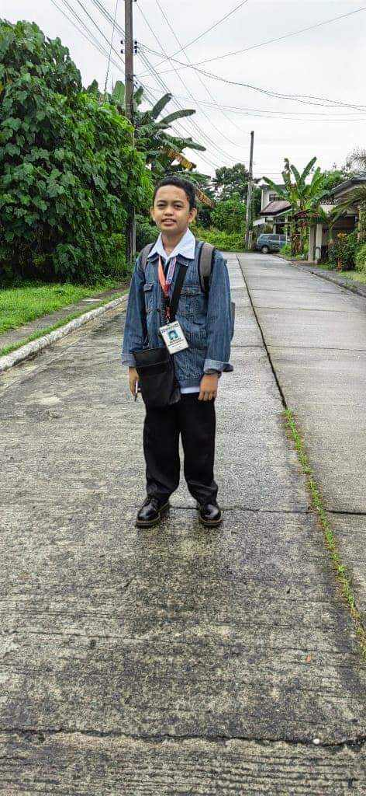

The founder of the Watelikers Organization is David Jowenn R. Gorduiz. But mainly, Leadership among our teammates helped ignite the spirit of the Watelikers! As we move on to the new year, it is best to imagine a time when we only began this organization until now.
The Watelikers organization envision a world where every drop of water is safe and usable for the general public. We strive where water safety and drinkability are not just standards but fundamental rights, ensuring the well-being and prosperity for all.
As an organization supporting the movement of mass availability and useability of water, we dedicate ourselves to eventually eradicate waterborne illnesses, promote sustainable water practices, and empower communities to safeguard their water sources for generations to come.
Spare us a dime, or even a penny. As an ambitious organization that aims for environmental friendliness, we promise that it is in your best interest to donate money to us in order to fund our activities to help this dying world.